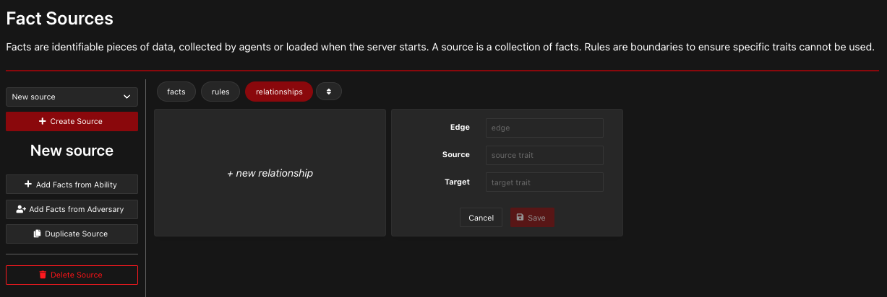

Relationships¶
Many CALDERA abilities require input variables called “facts” to be provided before the ability can be run. These facts can be provided through fact sources, or they can be discovered by a previous ability.
Creating Relationships using Abilities¶
Example¶
As an example, the following printer discovery ability will create two facts called host.print.file and host.print.size:
- id: 6c91884e-11ec-422f-a6ed-e76774b0daac
name: View printer queue
description: View details of queued documents in printer queue
tactic: discovery
technique:
attack_id: T1120
name: Peripheral Device Discovery
platforms:
darwin:
sh:
command: lpq -a
parsers:
plugins.stockpile.app.parsers.printer_queue:
- source: host.print.file
edge: has_size
target: host.print.size
This ability will view the printer queue using the command lpq -a. The result of lpq -a will be parsed into two facts: host.print.file (the source) and host.print.size (the target). These two facts are dependent on each other, and it will be helpful to understand their connection in order to use them. Therefore, we use the edge variable to explain the relationship between the source and the target. In this case, the edge is has_size, because host.print.size is the file size of host.print.file. All together, the source, edge, and target comprise a “relationship”. To learn more about how the parser file creates a relationship, refer to Parsers.
Multiple Instances of a Fact¶
Storing the relationship between the source and the target in the edge allows CALDERA to save several instances of each fact while maintaining the connection between facts. For example, if the printer discovery ability (shown above) is run, and several files are discovered in the printer queue, the following facts may be created.
host.print.file |
host.print.size (bytes) |
|---|---|
essay.docx |
12288 |
image-1.png |
635000 |
Flier.pdf |
85300 |
The table above shows how each host.print.file value is associated with exactly one host.print.size value. This demonstrates the importance of the edge; it maintains the association between each pair of source and target values. Without the edge, we would just have a list of values but no information about their relationships, similar to the following:
host.print.file:essay.docx,image-1.png,Flier.pdfhost.print.size:12288,635000,85300
Optional Components¶
Note that the edge and the target are optional. You can create a source as an independent fact without needing to connect it to a target.
Creating Relationships using CALDERA Server¶
Relationships can also be created in the CALDERA Server GUI. Use the left sidebar to navigate to “fact sources.” Then, click “relationships” followed by “new relationship.” You can fill in values for the edge, source, and target to be used in future operations. Then click “Save” to finish!
